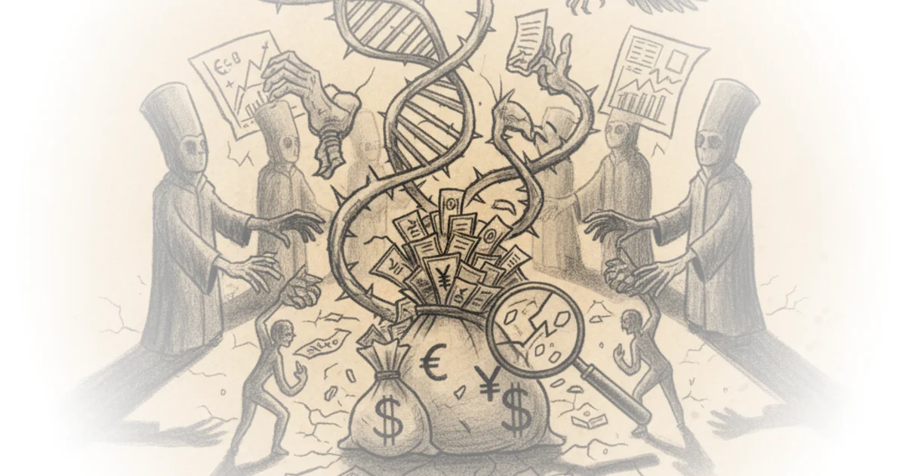

This piece delivers a devastating indictment of the modern scientific establishment, arguing that the very institutions designed to verify truth have become a cartel protecting fraudsters while raking in billions of taxpayer dollars. It moves beyond the typical narrative of a "bad apple" to expose a systemic rot where incentives are structurally misaligned with the pursuit of reality, a failure that has real-world consequences for patients waiting for cures that may never come.
The Human Cost of a Broken System
The article opens not with data, but with a harrowing personal account of a grandmother's descent into Alzheimer's, grounding the abstract concept of "academic misconduct" in the visceral reality of human suffering. This emotional anchor is crucial. It frames the subsequent discussion of Sylvain Lesné, a neuroscientist whose 2006 paper in Nature claimed to identify the specific protein causing memory loss, not as a mere academic dispute, but as a catalyst for a decade of wasted resources. Reason reports, "For his own pride, greed, and acclaim, this man had doomed millions of people like my grandmother to slow, horrible deaths and millions more like my mom to agonizing years as caregivers."

The piece details how Lesné's work reinvigorated the amyloid hypothesis just as skepticism was rising, leading the National Institutes of Health to devote $1.6 billion to amyloid-related projects in 2022 alone. This investment occurred despite the fact that pharmaceutical trials based on this research repeatedly failed. The article notes that when Vanderbilt neuroscientist Matthew Schrag uncovered evidence of image manipulation in 2022, it was merely the tip of the iceberg, with Science magazine finding over 70 instances of possible tampering across 20 papers. Yet, the system's response was glacial; Lesné only resigned in March 2025, three years after the fraud was exposed, and crucially, "none of his grant money was clawed back." This delay and lack of financial restitution highlight a profound disconnect between the severity of the harm and the accountability mechanisms in place.
The system that was supposed to catch this—peer review, university compliance, journal editorial boards—failed repeatedly for years.
Critics might argue that science is inherently self-correcting and that the eventual exposure of Lesné proves the system works, albeit slowly. However, the piece effectively counters this by pointing out that the "self-correction" came from external whistleblowers and investigative journalism, not the internal peer review process that allowed the fraud to persist for nearly two decades.
The Economics of Fraud
The commentary then shifts to a broader structural analysis, arguing that Lesné was not an anomaly but a product of a system that rewards novelty over replication. The article cites a 2009 meta-analysis by Daniele Fanelli, noting that while only 2% of scientists self-reported fabrication, 14% admitted to witnessing it in colleagues. The numbers get more alarming when looking at specific data integrity: a 2021 study by J.B. Carlisle found that 44% of trials with available patient data had untrustworthy data, and 26% were "zombie trials" animated entirely by false data. The piece argues that "at least 400,000 papers published from 2000 through 2022 showed signs of coming from paper mills," creating a shadow market worth hundreds of millions of dollars.
This section draws on Mancur Olson's The Logic of Collective Action to explain why the corruption persists: the benefits of cheating are concentrated among a small group of researchers and publishers, while the costs are distributed across the vast population of patients and taxpayers. The editors note that peer reviewers are unpaid volunteers with no upside for catching fraud and significant social downsides for making accusations, while university administrators have concentrated incentives to protect grant-winning faculty. This creates a scenario where "the goals of individual scientists—getting published and getting grants—are structurally misaligned with the goals of science itself: the pursuit of truth."
The article also touches on the "Bootleggers and Baptists" phenomenon, where self-righteous gatekeepers insist on peer review for integrity, while the publishing oligopoly extracts billions in profit by charging for access to taxpayer-funded research. This dual dynamic creates a closed loop where the gatekeepers and the profiteers reinforce each other, making it nearly impossible for honest researchers to compete or for fraudulent work to be exposed in time.
A Path Forward: Radical Transparency
In the final section, the piece pivots from diagnosis to a potential cure, arguing that the answer is not "yet more gatekeeping by corrupt watchers." Instead, it advocates for "radical transparency and the free exchange of information." The author suggests that the professionalization and credentialism of the 20th century suppressed independent research, but the advent of powerful AI has collapsed the labor costs of accessing and synthesizing literature. The piece posits that "a motivated researcher with a ChatGPT Pro subscription can do in an hour what previously required months, a research team, and institutional library access."
To illustrate this potential, the author highlights their own work translating thousands of Chinese preprints and Soviet-era Russian papers, making previously inaccessible knowledge available to the global scientific community. The argument is that by removing barriers to information and allowing a "free market of ideas" to function, society can bypass the centralized planning of the NIH and the corrupt incentives of the academic cartel. The editors conclude with a stark warning: "Real people suffer and die when science is slow, when science is corrupt, when science is constrained."
Let free information and free markets do what centrally planned science cannot, and let the best works survive.
A counterargument worth considering is whether the sheer volume of data generated by AI and the lack of traditional peer review could lead to a new kind of chaos, where misinformation spreads as quickly as truth. While the piece champions the "free market of ideas," it does not fully address how to ensure quality control in a system that deliberately bypasses traditional gatekeepers.
Bottom Line
The strongest part of this argument is its unflinching connection between abstract academic incentives and the tangible, tragic loss of life, forcing the reader to confront the human cost of scientific fraud. Its biggest vulnerability lies in the optimism surrounding AI and decentralized research as a panacea, potentially underestimating the complexity of validating data without established institutional oversight. Readers should watch for how the scientific community responds to these calls for radical transparency, as the tension between centralized funding and open inquiry will likely define the next era of medical research.